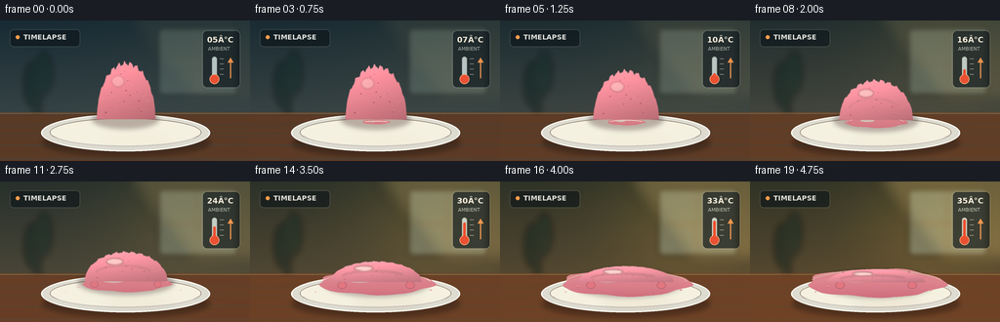
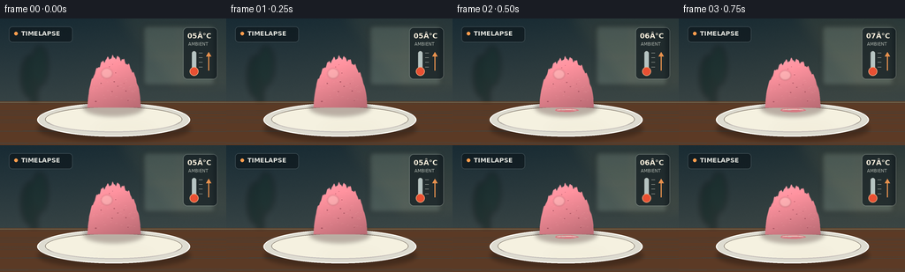
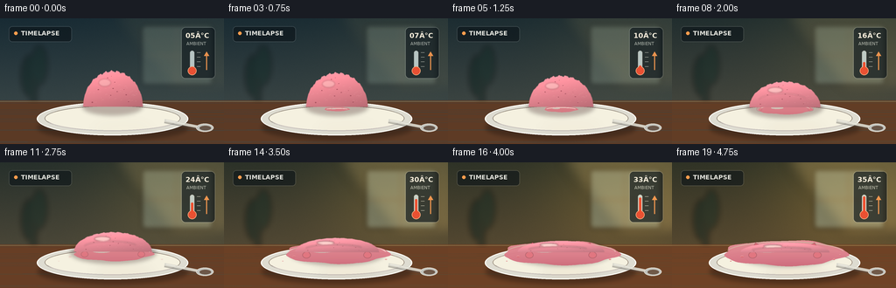
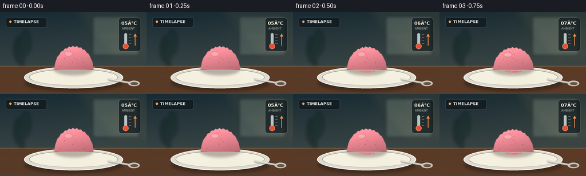
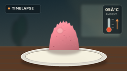
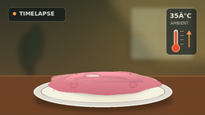

CODING AGENTS AS PIXEL WORLD MODELS
traex/GPT-5.6-Sol · phygen_099
点击播放 · 原生 RGB 像素
逐轮保存的候选
回放视频、检查图与代码变化。
每份候选均可单独播放。实际图片检查记录在下方工具轨迹中。
候选 01播放与检查图
点击播放 · 原生 RGB 像素


展开代码变化
--- 上一保存版本
+++ 本次保存版本
@@ -0,0 +1,243 @@
+from pathlib import Path
+import math
+import numpy as np
+from PIL import Image, ImageDraw, ImageFont, ImageFilter
+import artifact_io
+
+# Deterministic, hand-rendered timelapse.
+W, H, N, S = 256, 144, 20, 4
+WW, HH = W*S, H*S
+rng = np.random.default_rng(9917)
+
+try:
+ FONT_B = ImageFont.truetype('/usr/share/fonts/truetype/dejavu/DejaVuSans-Bold.ttf', 7*S)
+ FONT_S = ImageFont.truetype('/usr/share/fonts/truetype/dejavu/DejaVuSans.ttf', 5*S)
+ FONT_T = ImageFont.truetype('/usr/share/fonts/truetype/dejavu/DejaVuSans-Bold.ttf', 8*S)
+except OSError:
+ FONT_B = FONT_S = FONT_T = ImageFont.load_default()
+
+def sc(v): return int(round(v*S))
+def box(a,b,c,d): return (sc(a),sc(b),sc(c),sc(d))
+def smooth(x):
+ x = np.clip(x, 0., 1.)
+ return x*x*(3-2*x)
+
+def rgba_layer(): return Image.new('RGBA', (WW,HH), (0,0,0,0))
+
+def ellipse_soft(base, bounds, color, blur=0):
+ lay = rgba_layer(); d = ImageDraw.Draw(lay)
+ d.ellipse(tuple(sc(x) for x in bounds), fill=color)
+ if blur: lay = lay.filter(ImageFilter.GaussianBlur(sc(blur)))
+ base.alpha_composite(lay)
+
+def frame_at(k):
+ p = k/(N-1)
+ m = smooth(p)
+ # Background: cool morning gradually becomes substantially warmer.
+ yy, xx = np.mgrid[0:HH,0:WW]
+ xn, yn = xx/WW, yy/HH
+ warm = m
+ top = np.array([24+24*warm, 43+8*warm, 52-14*warm], float)
+ bot = np.array([69+35*warm, 79+3*warm, 77-25*warm], float)
+ grad = top[None,None,:]*(1-yn[:,:,None]) + bot[None,None,:]*yn[:,:,None]
+ # Window sunlight from upper right grows in the timelapse.
+ glow = np.exp(-((xn-.78)**2/.12 + (yn-.26)**2/.24))[:,:,None]
+ grad += glow*np.array([35,25,5])[None,None,:]*(.18+.82*m)
+ # Fine film grain, fixed so it does not flicker.
+ noise = np.random.default_rng(42).normal(0,1.15,(HH,WW,1))
+ grad = np.clip(grad+noise,0,255).astype(np.uint8)
+ im = Image.fromarray(np.dstack([grad, np.full((HH,WW),255,np.uint8)]), 'RGBA')
+
+ # Defocused window and cafe geometry.
+ bg = rgba_layer(); d = ImageDraw.Draw(bg)
+ d.rounded_rectangle(box(162,8,243,76), radius=sc(3), fill=(183,209,191,45+int(45*m)), outline=(225,226,205,80), width=sc(1))
+ d.line((sc(202),sc(9),sc(202),sc(76)), fill=(235,225,195,45), width=sc(2))
+ d.line((sc(163),sc(43),sc(242),sc(43)), fill=(235,225,195,45), width=sc(2))
+ # blurred plant silhouette
+ d.ellipse(box(24,42,45,90), fill=(9,31,27,115)); d.ellipse(box(36,31,54,76), fill=(10,36,30,100))
+ d.rectangle(box(35,68,42,103), fill=(14,31,27,110))
+ bg = bg.filter(ImageFilter.GaussianBlur(sc(3.0)))
+ im.alpha_composite(bg)
+
+ # Warm diagonal sunlight on wall.
+ sun = rgba_layer(); sd=ImageDraw.Draw(sun)
+ alpha=int(12+42*m)
+ sd.polygon([(sc(130),0),(WW,0),(WW,sc(83)),(sc(197),sc(83))], fill=(255,214,130,alpha))
+ sun=sun.filter(ImageFilter.GaussianBlur(sc(8)))
+ im.alpha_composite(sun)
+
+ # Wooden counter.
+ table = rgba_layer(); td=ImageDraw.Draw(table)
+ td.rectangle(box(0,94,256,144), fill=(91+int(20*m),58+int(8*m),37,255))
+ # horizontal grain
+ for j in range(14):
+ y=97+(j*11 % 45)+2*math.sin(j*1.7)
+ col=(52,31,23,25+(j%3)*8)
+ td.line((0,sc(y),WW,sc(y+1.1*math.sin(j))),fill=col,width=sc(.35))
+ td.line((0,sc(95),WW,sc(95)),fill=(222,168,100,80),width=sc(1))
+ im.alpha_composite(table)
+
+ # Header card: understated timelapse cue.
+ ui=rgba_layer(); ud=ImageDraw.Draw(ui)
+ ud.rounded_rectangle(box(10,9,82,27), radius=sc(4), fill=(9,17,22,148), outline=(255,255,255,30), width=sc(.7))
+ ud.ellipse(box(16,15,20,19), fill=(255,157,77,255))
+ ud.text((sc(24),sc(13)), 'TIMELAPSE', font=FONT_B, fill=(245,245,238,235))
+ im.alpha_composite(ui)
+
+ # Thermometer instrument, with clearly rising mercury and numerical temperature.
+ th=rgba_layer(); dd=ImageDraw.Draw(th)
+ dd.rounded_rectangle(box(207,10,246,69), radius=sc(5), fill=(8,17,23,165), outline=(255,255,255,40), width=sc(.7))
+ temp=5+30*m
+ dd.text((sc(212),sc(15)), f'{int(round(temp)):02d}°C', font=FONT_T, fill=(255,244,225,245))
+ dd.text((sc(213),sc(26)), 'AMBIENT', font=FONT_S, fill=(220,224,216,165))
+ # thermometer glass and ticks
+ dd.rounded_rectangle(box(217,37,222,59),radius=sc(2.5),fill=(220,235,235,185),outline=(255,255,255,120),width=sc(.6))
+ dd.ellipse(box(214.5,55,224.5,65),fill=(235,80,50,250),outline=(255,177,130,220),width=sc(.7))
+ level=57-(temp-5)/30*18
+ dd.rounded_rectangle(box(218.2,level,220.8,59),radius=sc(1.2),fill=(239,78,45,255))
+ for j in range(4):
+ y=39+j*5.3; dd.line((sc(225),sc(y),sc(229),sc(y)),fill=(235,235,225,150),width=sc(.6))
+ # tiny upward arrow
+ dd.line((sc(236),sc(59),sc(236),sc(40)), fill=(255,153,76,220), width=sc(1.2))
+ dd.polygon([(sc(233),sc(43)),(sc(236),sc(38)),(sc(239),sc(43))],fill=(255,153,76,220))
+ im.alpha_composite(th)
+
+ # Plate shadow, ceramic plate, rim and inner well.
+ ellipse_soft(im,(43,111,215,139),(25,16,12,95),2.5)
+ plate=rgba_layer(); pd=ImageDraw.Draw(plate)
+ pd.ellipse(box(42,96,215,134), fill=(222,220,209,255), outline=(255,255,248,255), width=sc(1.2))
+ pd.ellipse(box(51,100,206,129), fill=(245,241,224,255), outline=(176,180,171,150), width=sc(.75))
+ pd.arc(box(53,102,204,129), 12, 168, fill=(255,255,255,180), width=sc(1))
+ im.alpha_composite(plate)
+
+ # Contact shadow changes from a tight scoop shadow to a broad, soft melt shadow.
+ ellipse_soft(im,(94-23*m,91,163+25*m,111+8*m),(57,26,29,80),2.2)
+
+ # Melt pool grows continuously: irregular perimeter plus inner translucent reflections.
+ pool_start=smooth((p-.08)/.92)
+ if pool_start>0:
+ cx,cy=129,104
+ rx=13+57*pool_start; ry=2.0+12.5*pool_start
+ pts=[]
+ for a in np.linspace(0,2*math.pi,100,endpoint=False):
+ wob=(1+.045*math.sin(5*a+1.3)+.025*math.sin(9*a-.4))
+ pts.append((sc(cx+rx*wob*math.cos(a)), sc(cy+ry*wob*math.sin(a))))
+ pm=Image.new('L',(WW,HH),0); md=ImageDraw.Draw(pm); md.polygon(pts,fill=int(215+35*pool_start))
+ # pink base gradient clipped by pool mask
+ arr=np.zeros((HH,WW,4),np.uint8)
+ local=((yy/sc(1)-93)/28).clip(0,1)
+ arr[...,0]=(229-20*local).astype(np.uint8)
+ arr[...,1]=(128-35*local+15*m).astype(np.uint8)
+ arr[...,2]=(135-24*local+15*m).astype(np.uint8)
+ arr[...,3]=np.asarray(pm)
+ pool=Image.fromarray(arr,'RGBA')
+ # soft edge highlight
+ ph=ImageDraw.Draw(pool)
+ ph.arc((sc(cx-rx+2),sc(cy-ry+1),sc(cx+rx-2),sc(cy+ry-1)),195,350,fill=(255,213,204,190),width=sc(1))
+ ph.ellipse(box(cx-rx*.52,cy-ry*.45,cx-rx*.06,cy-ry*.05),fill=(255,232,220,85))
+ im.alpha_composite(pool)
+
+ # Liquid rivulets emerge from the collapsing mound.
+ drip=smooth((p-.18)/.58)
+ if drip>0:
+ dl=rgba_layer(); q=ImageDraw.Draw(dl)
+ # left and right trails widen as gravity draws them down
+ for side,phase in [(-1,0),(1,1)]:
+ x0=129+side*(20+12*m)
+ y0=85+8*m
+ y1=102+3*drip
+ wd=2.2+2.2*drip
+ q.line([(sc(x0),sc(y0)),(sc(x0+side*3),sc((y0+y1)/2)),(sc(x0+side*5),sc(y1))],fill=(214,98,111,int(235*drip)),width=sc(wd))
+ q.ellipse(box(x0+side*5-wd,y1-wd/2,x0+side*5+wd,y1+wd),fill=(226,117,127,int(230*drip)))
+ dl=dl.filter(ImageFilter.GaussianBlur(sc(.35)))
+ im.alpha_composite(dl)
+
+ # Remaining scoop/mound. Volume is preserved early then spreads and visibly loses height.
+ bh=55*(1-.76*m) + 2*(1-m)
+ br=30+20*m
+ basey=101+2*m
+ cx=129
+ # Organic scoop silhouette with shrinking scallops.
+ toppts=[]
+ for i,x in enumerate(np.linspace(-br,br,130)):
+ z=np.clip(x/br,-1,1)
+ dome=math.sqrt(max(0,1-z*z))
+ lobe=(2.0*(1-m))*math.sin(i*.48+0.4)+(.8*(1-m))*math.sin(i*1.11)
+ y=basey-bh*dome + lobe*(.25+.75*dome)
+ toppts.append((sc(cx+x),sc(y)))
+ bottom=[(sc(cx+br),sc(basey)),(sc(cx-br),sc(basey))]
+ bodymask=Image.new('L',(WW,HH),0); bmd=ImageDraw.Draw(bodymask)
+ bmd.polygon(toppts+bottom,fill=255)
+ # subtle antialiased softness
+ bodymask=bodymask.filter(ImageFilter.GaussianBlur(sc(.18)))
+
+ # Shaded strawberry ice cream: directional warm key, darker underside.
+ maskarr=np.asarray(bodymask).astype(np.float32)/255
+ y_norm=np.clip((yy/S-(basey-bh))/(max(bh,1)),0,1)
+ x_norm=np.clip((xx/S-(cx-br))/(max(2*br,1)),0,1)
+ key=np.clip(.8+.30*(1-y_norm)+.12*(1-x_norm),0,1.25)
+ r=(230*key+8*m).clip(0,255)
+ g=(132*key+13*m).clip(0,255)
+ b=(143*key+15*m).clip(0,255)
+ barr=np.stack([r,g,b,maskarr*255],axis=-1).astype(np.uint8)
+ body=Image.fromarray(barr,'RGBA')
+ im.alpha_composite(body)
+
+ # Scoop texture and strawberry inclusions, locked to material and fading as it liquefies.
+ tex=rgba_layer(); xd=ImageDraw.Draw(tex)
+ tex_alpha=(1-.62*m)
+ # deterministic polar distribution, remapped with changing radius/height
+ trng=np.random.default_rng(303)
+ for j in range(54):
+ ux=trng.uniform(-.9,.9)
+ dome=math.sqrt(max(0,1-ux*ux))
+ uy=trng.uniform(.12,.88)
+ x=cx+ux*br*.96
+ top=basey-bh*dome
+ y=top+uy*(basey-top)
+ rr=trng.uniform(.35,1.05)*(1-.25*m)
+ if j%5==0:
+ col=(124,48,63,int(130*tex_alpha))
+ xd.ellipse(box(x-rr,y-rr*.6,x+rr,y+rr*.6),fill=col)
+ else:
+ col=(255,205,195,int(70*tex_alpha))
+ xd.arc(box(x-rr*1.5,y-rr,x+rr*1.5,y+rr),180,340,fill=col,width=sc(.35))
+ # Clip texture to scoop mask.
+ ta=np.array(tex); ta[...,3]=(ta[...,3].astype(np.float32)*maskarr).astype(np.uint8)
+ im.alpha_composite(Image.fromarray(ta,'RGBA'))
+
+ # Gloss blooms over the surface as the ice cream melts.
+ gloss=rgba_layer(); gd=ImageDraw.Draw(gloss)
+ ga=int(70+125*m)
+ gd.ellipse(box(cx-br*.48,basey-bh*.78,cx-br*.07,basey-bh*.60+1), fill=(255,239,225,ga))
+ if m>.35:
+ gd.arc(box(cx-br*.76,basey-bh*.55,cx+br*.65,basey+2),195,335,fill=(255,225,215,int(125*m)),width=sc(1.1))
+ gloss=gloss.filter(ImageFilter.GaussianBlur(sc(.7)))
+ # Clip gloss to body.
+ ga_arr=np.array(gloss); ga_arr[...,3]=(ga_arr[...,3].astype(np.float32)*maskarr).astype(np.uint8)
+ im.alpha_composite(Image.fromarray(ga_arr,'RGBA'))
+
+ # A few cream highlights and detached pink droplets on the plate at late stages.
+ if p>.42:
+ drops=rgba_layer(); dr=ImageDraw.Draw(drops)
+ a=int(220*smooth((p-.42)/.58))
+ for x,y,r0 in [(80,108,1.7),(185,111,1.3),(192,106,.8),(67,113,.8)]:
+ dr.ellipse(box(x-r0,y-r0*.55,x+r0,y+r0*.55),fill=(220,113,122,a))
+ dr.arc(box(x-r0,y-r0*.6,x+r0,y+r0*.5),185,330,fill=(255,221,210,a),width=sc(.35))
+ im.alpha_composite(drops)
+
+ # Foreground warm reflection develops in direct response to heat/light.
+ refl=rgba_layer(); rd=ImageDraw.Draw(refl)
+ rd.ellipse(box(107,120,174,132),fill=(255,182,111,int(8+17*m)))
+ refl=refl.filter(ImageFilter.GaussianBlur(sc(6)))
+ im.alpha_composite(refl)
+
+ # Downsample supersampled art for clean natural edges.
+ return np.asarray(im.convert('RGB').resize((W,H),Image.Resampling.LANCZOS),dtype=np.uint8)
+
+def main():
+ frames=np.stack([frame_at(i) for i in range(N)],axis=0)
+ artifact_io.save(frames, Path(__file__).resolve().parent)
+
+if __name__=='__main__':
+ main()
候选 02播放与检查图
点击播放 · 原生 RGB 像素


展开代码变化
--- 上一保存版本
+++ 本次保存版本
@@ -109,6 +109,15 @@
pd.ellipse(box(51,100,206,129), fill=(245,241,224,255), outline=(176,180,171,150), width=sc(.75))
pd.arc(box(53,102,204,129), 12, 168, fill=(255,255,255,180), width=sc(1))
im.alpha_composite(plate)
+
+ # Small stainless dessert spoon grounds the scale and food context.
+ spoon=rgba_layer(); sp=ImageDraw.Draw(spoon)
+ sp.line((sc(188),sc(118),sc(234),sc(127)), fill=(90,88,83,100), width=sc(4.2))
+ sp.line((sc(188),sc(116.8),sc(234),sc(125.8)), fill=(218,216,205,245), width=sc(3.2))
+ sp.line((sc(190),sc(116.7),sc(233),sc(125.2)), fill=(255,255,248,160), width=sc(.7))
+ sp.ellipse(box(224,120.5,244,130), fill=(195,196,190,255), outline=(249,248,239,210), width=sc(.7))
+ sp.ellipse(box(228,123,241,128.3), fill=(116,115,111,120))
+ im.alpha_composite(spoon)
# Contact shadow changes from a tight scoop shadow to a broad, soft melt shadow.
ellipse_soft(im,(94-23*m,91,163+25*m,111+8*m),(57,26,29,80),2.2)
@@ -153,8 +162,8 @@
im.alpha_composite(dl)
# Remaining scoop/mound. Volume is preserved early then spreads and visibly loses height.
- bh=55*(1-.76*m) + 2*(1-m)
- br=30+20*m
+ bh=39*(1-.72*m) + 1.5*(1-m)
+ br=34+17*m
basey=101+2*m
cx=129
# Organic scoop silhouette with shrinking scallops.
@@ -162,7 +171,7 @@
for i,x in enumerate(np.linspace(-br,br,130)):
z=np.clip(x/br,-1,1)
dome=math.sqrt(max(0,1-z*z))
- lobe=(2.0*(1-m))*math.sin(i*.48+0.4)+(.8*(1-m))*math.sin(i*1.11)
+ lobe=(.9*(1-m))*math.sin(i*.48+0.4)+(.38*(1-m))*math.sin(i*1.11)
y=basey-bh*dome + lobe*(.25+.75*dome)
toppts.append((sc(cx+x),sc(y)))
bottom=[(sc(cx+br),sc(basey)),(sc(cx-br),sc(basey))]
可观测工具轨迹
实际执行的命令与返回图片。
命令 1exit 0
/bin/bash -lc "cat prompt.txt && printf '\\n--- GENERATION_RULES.md ---\\n' && cat GENERATION_RULES.md"
命令 2exit 0
/bin/bash -lc "printf '%s\\n' '--- task_spec.json ---' && cat task_spec.json && printf '%s\\n' '--- files ---' && find . -maxdepth 2 -type f -printf '%p\\n' | sort"
命令 3exit 0
/bin/bash -lc "sed -n '1,240p' artifact_io.py"
命令 4exit 0
/bin/bash -lc "cat > generate.py <<'PY'
from pathlib import Path
import math
import numpy as np
from PIL import Image, ImageDraw, ImageFont, ImageFilter
import artifact_io
# Deterministic, hand-rendered timelapse.
W, H, N, S = 256, 144, 20, 4
WW, HH = W*S, H*S
rng = np.random.default_rng(9917)
try:
FONT_B = ImageFont.truetype('/usr/share/fonts/truetype/dejavu/DejaVuSans-Bold.ttf', 7*S)
FONT_S = ImageFont.truetype('/usr/share/fonts/truetype/dejavu/DejaVuSans.ttf', 5*S)
FONT_T = ImageFont.truetype('/usr/share/fonts/truetype/dejavu/DejaVuSans-Bold.ttf', 8*S)
except OSError:
FONT_B = FONT_S = FONT_T = ImageFont.load_default()
def sc(v): return int(round(v*S))
def box(a,b,c,d): return (sc(a),sc(b),sc(c),sc(d))
def smooth(x):
x = np.clip(x, 0., 1.)
return x*x*(3-2*x)
def rgba_layer(): return Image.new('RGBA', (WW,HH), (0,0,0,0))
def ellipse_soft(base, bounds, color, blur=0):
lay = rgba_layer(); d = ImageDraw.Draw(lay)
d.ellipse(tuple(sc(x) for x in bounds), fill=color)
if blur: lay = lay.filter(ImageFilter.GaussianBlur(sc(blur)))
base.alpha_composite(lay)
def frame_at(k):
p = k/(N-1)
m = smooth(p)
# Background: cool morning gradually becomes substantially warmer.
yy, xx = np.mgrid[0:HH,0:WW]
xn, yn = xx/WW, yy/HH
warm = m
top = np.array([24+24*warm, 43+8*warm, 52-14*warm], float)
bot = np.array([69+35*warm, 79+3*warm, 77-25*warm], float)
grad = top[None,None,:]*(1-yn[:,:,None]) + bot[None,None,:]*yn[:,:,None]
# Window sunlight from upper right grows in the timelapse.
glow = np.exp(-((xn-.78)**2/.12 + (yn-.26)**2/.24))[:,:,None]
grad += glow*np.array([35,25,5])[None,None,:]*(.18+.82*m)
# Fine film grain, fixed so it does not flicker.
noise = np.random.default_rng(42).normal(0,1.15,(HH,WW,1))
grad = np.clip(grad+noise,0,255).astype(np.uint8)
im = Image.fromarray(np.dstack([grad, np.full((HH,WW),255,np.uint8)]), 'RGBA')
# Defocused window and cafe geometry.
bg = rgba_layer(); d = ImageDraw.Draw(bg)
d.rounded_rectangle(box(162,8,243,76), radius=sc(3), fill=(183,209,191,45+int(45*m)), outline=(225,226,205,80), width=sc(1))
d.line((sc(202),sc(9),sc(202),sc(76)), fill=(235,225,195,45), width=sc(2))
d.line((sc(163),sc(43),sc(242),sc(43)), fill=(235,225,195,45), width=sc(2))
# blurred plant silhouette
d.ellipse(box(24,42,45,90), fill=(9,31,27,115)); d.ellipse(box(36,31,54,76), fill=(10,36,30,100))
d.rectangle(box(35,68,42,103), fill=(14,31,27,110))
bg = bg.filter(ImageFilter.GaussianBlur(sc(3.0)))
im.alpha_composite(bg)
# Warm diagonal sunlight on wall.
sun = rgba_layer(); sd=ImageDraw.Draw(sun)
alpha=int(12+42*m)
sd.polygon([(sc(130),0),(WW,0),(WW,sc(83)),(sc(197),sc(83))], fill=(255,214,130,alpha))
sun=sun.filter(ImageFilter.GaussianBlur(sc(8)))
im.alpha_composite(sun)
# Wooden counter.
table = rgba_layer(); td=ImageDraw.Draw(table)
td.rectangle(box(0,94,256,144), fill=(91+int(20*m),58+int(8*m),37,255))
# horizontal grain
for j in range(14):
y=97+(j*11 % 45)+2*math.sin(j*1.7)
col=(52,31,23,25+(j%3)*8)
td.line((0,sc(y),WW,sc(y+1.1*math.sin(j))),fill=col,width=sc(.35))
td.line((0,sc(95),WW,sc(95)),fill=(222,168,100,80),width=sc(1))
im.alpha_composite(table)
# Header card: understated timelapse cue.
ui=rgba_layer(); ud=ImageDraw.Draw(ui)
ud.rounded_rectangle(box(10,9,82,27), radius=sc(4), fill=(9,17,22,148), outline=(255,255,255,30), width=sc(.7))
ud.ellipse(box(16,15,20,19), fill=(255,157,77,255))
ud.text((sc(24),sc(13)), 'TIMELAPSE', font=FONT_B, fill=(245,245,238,235))
im.alpha_composite(ui)
# Thermometer instrument, with clearly rising mercury and numerical temperature.
th=rgba_layer(); dd=ImageDraw.Draw(th)
dd.rounded_rectangle(box(207,10,246,69), radius=sc(5), fill=(8,17,23,165), outline=(255,255,255,40), width=sc(.7))
temp=5+30*m
dd.text((sc(212),sc(15)), f'{int(round(temp)):02d}°C', font=FONT_T, fill=(255,244,225,245))
dd.text((sc(213),sc(26)), 'AMBIENT', font=FONT_S, fill=(220,224,216,165))
# thermometer glass and ticks
dd.rounded_rectangle(box(217,37,222,59),radius=sc(2.5),fill=(220,235,235,185),outline=(255,255,255,120),width=sc(.6))
dd.ellipse(box(214.5,55,224.5,65),fill=(235,80,50,250),outline=(255,177,130,220),width=sc(.7))
level=57-(temp-5)/30*18
dd.rounded_rectangle(box(218.2,level,220.8,59),radius=sc(1.2),fill=(239,78,45,255))
for j in range(4):
y=39+j*5.3; dd.line((sc(225),sc(y),sc(229),sc(y)),fill=(235,235,225,150),width=sc(.6))
# tiny upward arrow
dd.line((sc(236),sc(59),sc(236),sc(40)), fill=(255,153,76,220), width=sc(1.2))
dd.polygon([(sc(233),sc(43)),(sc(236),sc(38)),(sc(239),sc(43))],fill=(255,153,76,220))
im.alpha_composite(th)
# Plate shadow, ceramic plate, rim and inner well.
ellipse_soft(im,(43,111,215,139),(25,16,12,95),2.5)
plate=rgba_layer(); pd=ImageDraw.Draw(plate)
pd.ellipse(box(42,96,215,134), fill=(222,220,209,255), outline=(255,255,248,255), width=sc(1.2))
pd.ellipse(box(51,100,206,129), fill=(245,241,224,255), outline=(176,180,171,150), width=sc(.75))
pd.arc(box(53,102,204,129), 12, 168, fill=(255,255,255,180), width=sc(1))
im.alpha_composite(plate)
# Contact shadow changes from a tight scoop shadow to a broad, soft melt shadow.
ellipse_soft(im,(94-23*m,91,163+25*m,111+8*m),(57,26,29,80),2.2)
# Melt pool grows continuously: irregular perimeter plus inner translucent reflections.
pool_start=smooth((p-.08)/.92)
if pool_start>0:
cx,cy=129,104
rx=13+57*pool_start; ry=2.0+12.5*pool_start
pts=[]
for a in np.linspace(0,2*math.pi,100,endpoint=False):
wob=(1+.045*math.sin(5*a+1.3)+.025*math.sin(9*a-.4))
pts.append((sc(cx+rx*wob*math.cos(a)), sc(cy+ry*wob*math.sin(a))))
pm=Image.new('L',(WW,HH),0); md=ImageDraw.Draw(pm); md.polygon(pts,fill=int(215+35*pool_start))
# pink base gradient clipped by pool mask
arr=np.zeros((HH,WW,4),np.uint8)
local=((yy/sc(1)-93)/28).clip(0,1)
arr[...,0]=(229-20*local).astype(np.uint8)
arr[...,1]=(128-35*local+15*m).astype(np.uint8)
arr[...,2]=(135-24*local+15*m).astype(np.uint8)
arr[...,3]=np.asarray(pm)
pool=Image.fromarray(arr,'RGBA')
# soft edge highlight
ph=ImageDraw.Draw(pool)
ph.arc((sc(cx-rx+2),sc(cy-ry+1),sc(cx+rx-2),sc(cy+ry-1)),195,350,fill=(255,213,204,190),width=sc(1))
ph.ellipse(box(cx-rx*.52,cy-ry*.45,cx-rx*.06,cy-ry*.05),fill=(255,232,220,85))
im.alpha_composite(pool)
# Liquid rivulets emerge from the collapsing mound.
drip=smooth((p-.18)/.58)
if drip>0:
dl=rgba_layer(); q=ImageDraw.Draw(dl)
# left and right trails widen as gravity draws them down
for side,phase in [(-1,0),(1,1)]:
x0=129+side*(20+12*m)
y0=85+8*m
y1=102+3*drip
wd=2.2+2.2*drip
q.line([(sc(x0),sc(y0)),(sc(x0+side*3),sc((y0+y1)/2)),(sc(x0+side*5),sc(y1))],fill=(214,98,111,int(235*drip)),width=sc(wd))
q.ellipse(box(x0+side*5-wd,y1-wd/2,x0+side*5+wd,y1+wd),fill=(226,117,127,int(230*drip)))
dl=dl.filter(ImageFilter.GaussianBlur(sc(.35)))
im.alpha_composite(dl)
# Remaining scoop/mound. Volume is preserved early then spreads and visibly loses height.
bh=55*(1-.76*m) + 2*(1-m)
br=30+20*m
basey=101+2*m
cx=129
# Organic scoop silhouette with shrinking scallops.
toppts=[]
for i,x in enumerate(np.linspace(-br,br,130)):
z=np.clip(x/br,-1,1)
dome=math.sqrt(max(0,1-z*z))
lobe=(2.0*(1-m))*math.sin(i*.48+0.4)+(.8*(1-m))*math.sin(i*1.11)
y=basey-bh*dome + lobe*(.25+.75*dome)
toppts.append((sc(cx+x),sc(y)))
bottom=[(sc(cx+br),sc(basey)),(sc(cx-br),sc(basey))]
bodymask=Image.new('L',(WW,HH),0); bmd=ImageDraw.Draw(bodymask)
bmd.polygon(toppts+bottom,fill=255)
# subtle antialiased softness
bodymask=bodymask.filter(ImageFilter.GaussianBlur(sc(.18)))
# Shaded strawberry ice cream: directional warm key, darker underside.
maskarr=np.asarray(bodymask).astype(np.float32)/255
y_norm=np.clip((yy/S-(basey-bh))/(max(bh,1)),0,1)
x_norm=np.clip((xx/S-(cx-br))/(max(2*br,1)),0,1)
key=np.clip(.8+.30*(1-y_norm)+.12*(1-x_norm),0,1.25)
r=(230*key+8*m).clip(0,255)
g=(132*key+13*m).clip(0,255)
b=(143*key+15*m).clip(0,255)
barr=np.stack([r,g,b,maskarr*255],axis=-1).astype(np.uint8)
body=Image.fromarray(barr,'RGBA')
im.alpha_composite(body)
# Scoop texture and strawberry inclusions, locked to material and fading as it liquefies.
tex=rgba_layer(); xd=ImageDraw.Draw(tex)
tex_alpha=(1-.62*m)
# deterministic polar distribution, remapped with changing radius/height
trng=np.random.default_rng(303)
for j in range(54):
ux=trng.uniform(-.9,.9)
dome=math.sqrt(max(0,1-ux*ux))
uy=trng.uniform(.12,.88)
x=cx+ux*br*.96
top=basey-bh*dome
y=top+uy*(basey-top)
rr=trng.uniform(.35,1.05)*(1-.25*m)
if j%5==0:
col=(124,48,63,int(130*tex_alpha))
xd.ellipse(box(x-rr,y-rr*.6,x+rr,y+rr*.6),fill=col)
else:
col=(255,205,195,int(70*tex_alpha))
xd.arc(box(x-rr*1.5,y-rr,x+rr*1.5,y+rr),180,340,fill=col,width=sc(.35))
# Clip texture to scoop mask.
ta=np.array(tex); ta[...,3]=(ta[...,3].astype(np.float32)*maskarr).astype(np.uint8)
im.alpha_composite(Image.fromarray(ta,'RGBA'))
# Gloss blooms over the surface as the ice cream melts.
gloss=rgba_layer(); gd=ImageDraw.Draw(gloss)
ga=int(70+125*m)
gd.ellipse(box(cx-br*.48,basey-bh*.78,cx-br*.07,basey-bh*.60+1), fill=(255,239,225,ga))
if m>.35:
gd.arc(box(cx-br*.76,basey-bh*.55,cx+br*.65,basey+2),195,335,fill=(255,225,215,int(125*m)),width=sc(1.1))
gloss=gloss.filter(ImageFilter.GaussianBlur(sc(.7)))
# Clip gloss to body.
ga_arr=np.array(gloss); ga_arr[...,3]=(ga_arr[...,3].astype(np.float32)*maskarr).astype(np.uint8)
im.alpha_composite(Image.fromarray(ga_arr,'RGBA'))
# A few cream highlights and detached pink droplets on the plate at late stages.
if p>.42:
drops=rgba_layer(); dr=ImageDraw.Draw(drops)
a=int(220*smooth((p-.42)/.58))
for x,y,r0 in [(80,108,1.7),(185,111,1.3),(192,106,.8),(67,113,.8)]:
dr.ellipse(box(x-r0,y-r0*.55,x+r0,y+r0*.55),fill=(220,113,122,a))
dr.arc(box(x-r0,y-r0*.6,x+r0,y+r0*.5),185,330,fill=(255,221,210,a),width=sc(.35))
im.alpha_composite(drops)
# Foreground warm reflection develops in direct response to heat/light.
refl=rgba_layer(); rd=ImageDraw.Draw(refl)
rd.ellipse(box(107,120,174,132),fill=(255,182,111,int(8+17*m)))
refl=refl.filter(ImageFilter.GaussianBlur(sc(6)))
im.alpha_composite(refl)
# Downsample supersampled art for clean natural edges.
return np.asarray(im.convert('RGB').resize((W,H),Image.Resampling.LANCZOS),dtype=np.uint8)
def main():
frames=np.stack([frame_at(i) for i in range(N)],axis=0)
artifact_io.save(frames, Path(__file__).resolve().parent)
if __name__=='__main__':
main()
PY
python generate.py
ls -lh pixels.npz index.html inspection.png frames/00.png frames/19.png"命令 5exit 0
/bin/bash -lc "grep -n \"temp\\|bh=\\|lobe=\" generate.py | head -20
python - <<'PY'
from pathlib import Path
p=Path('generate.py')
s=p.read_text()
s=s.replace(\"f'{int(round(temp)):02d}ðC'\", \"f'{int(round(temp)):02d}\\\\N{DEGREE SIGN}C'\")
s=s.replace(\"bh=55*(1-.76*m) + 2*(1-m)\", \"bh=39*(1-.72*m) + 1.5*(1-m)\")
s=s.replace(\"br=30+20*m\", \"br=34+17*m\")
s=s.replace(\"lobe=(2.0*(1-m))*math.sin(i*.48+0.4)+(.8*(1-m))*math.sin(i*1.11)\", \"lobe=(.9*(1-m))*math.sin(i*.48+0.4)+(.38*(1-m))*math.sin(i*1.11)\")
# Add a spoon behind the dessert, just after plate compositing.
needle=\" im.alpha_composite(plate)\\n\\n # Contact shadow\"
insert=\"\"\" im.alpha_composite(plate)\\n\\n # Small stainless dessert spoon grounds the scale and food context.\\n spoon=rgba_layer(); sp=ImageDraw.Draw(spoon)\\n sp.line((sc(188),sc(118),sc(234),sc(127)), fill=(90,88,83,100), width=sc(4.2))\\n sp.line((sc(188),sc(116.8),sc(234),sc(125.8)), fill=(218,216,205,245), width=sc(3.2))\\n sp.line((sc(190),sc(116.7),sc(233),sc(125.2)), fill=(255,255,248,160), width=sc(.7))\\n sp.ellipse(box(224,120.5,244,130), fill=(195,196,190,255), outline=(249,248,239,210), width=sc(.7))\\n sp.ellipse(box(228,123,241,128.3), fill=(116,115,111,120))\\n im.alpha_composite(spoon)\\n\\n # Contact shadow\"\"\"
if needle not in s: raise SystemExit('insertion target missing')
s=s.replace(needle,insert)
p.write_text(s)
PY
python generate.py
python - <<'PY'
import json, numpy as np
from PIL import Image
p=np.load('pixels.npz')['pixels']
print('packed tensor:',p.shape,p.dtype,'unique first/last:',len(np.unique(p[:,:,0])),len(np.unique(p[:,:,-1])))
ims=[np.asarray(Image.open(f'frames/{i:02d}.png')) for i in range(20)]
a=np.stack(ims)
print('frames:',a.shape,a.dtype,'RGB modes:',{Image.open(f'frames/{i:02d}.png').mode for i in range(20)})
print('mean frame deltas:',np.round(np.abs(np.diff(a.astype(np.int16),axis=0)).mean((1,2,3)),2).tolist())
PY"视觉工具实际返回图片 1

视觉工具实际返回图片 2

视觉工具实际返回图片 3

视觉工具实际返回图片 4

保存候选 2 份；完成命令 5 次；可验证图片返回 4 张。原始 API 响应与完整日志保留在本地。